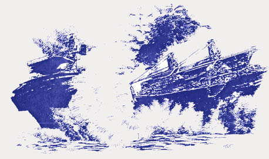

The Fate Of The New Carissa
By Arthur J Miller
Unnatural Disaster
Over the CB radio in my truck I heard the warning of the impending explosion that would set the New Carissa afire. I parked the truck and climbed up a hill overlooking the freighter aground in the surf. Waves were beating upon the hull of the ship as if they were trying to rid that foul thing from their domain. I thought how ironic it seemed, a human made creation of steel being subdued by the forces of nature. When will the human race learn that no matter what it can create, the forces of nature will always be more powerful? Though I looked upon the results of human folly, I was unprepared for what I was about to see.
 In the
infinite madness of human planning, bangalore torpedoes - metal tubes
containing explosives - were used to breach the ship's fuel tanks,
allowing the pressurized bunker oil to rush into the cargo holds. In the
holds they placed twelve 55-gallon drums of napalm which were
simultaneously ignited by C-4 plastic explosives. Two huge explosions, one
right after the other, lit up the sky. The last one sent a bright yellow
ball of flames towering hundreds of feet into the air. All my senses
became overwhelmed by what was happening. First the brightness of the
explosion, then almost as joined forces the loudness to my ears and the
shock wave that pushed upon my body and made the ground that I stood on
tremble. Then came the thick odor of burning fuel that I could not keep
from tasting in my mouth. A large black cloud of smoke drifted in the wind
away from the ship carrying with it contaminants from the oil, the lead
paint from the ship's bulkheads and everything else that was burning on
the ship.
In the
infinite madness of human planning, bangalore torpedoes - metal tubes
containing explosives - were used to breach the ship's fuel tanks,
allowing the pressurized bunker oil to rush into the cargo holds. In the
holds they placed twelve 55-gallon drums of napalm which were
simultaneously ignited by C-4 plastic explosives. Two huge explosions, one
right after the other, lit up the sky. The last one sent a bright yellow
ball of flames towering hundreds of feet into the air. All my senses
became overwhelmed by what was happening. First the brightness of the
explosion, then almost as joined forces the loudness to my ears and the
shock wave that pushed upon my body and made the ground that I stood on
tremble. Then came the thick odor of burning fuel that I could not keep
from tasting in my mouth. A large black cloud of smoke drifted in the wind
away from the ship carrying with it contaminants from the oil, the lead
paint from the ship's bulkheads and everything else that was burning on
the ship.
When my eyes could see the ship again I could see that there was a fire burning from the stern to the bow. After a little while the fire burned so hot that parts of the hull began to glow orange. I knew then that the ship would break up. A few hours later I heard on the news that it had broken into two parts.
Sometimes, when I am tired and a bit down, I wonder if our struggles have any real purpose. My thoughts right after what I had seen, made me once again understand that our struggles are not just about issues and grand ideas, but that all the struggles are about resisting the insanity of the industry monster built upon the unnatural lust of power and greed. Mother Earth warns us that we cannot dominate her and that we travel our misguided path at the risk of our own doom.
Cleaning Up
The Japanese owned, Panama registered 639-foot New Carissa ran aground on February fourth, about a hundred and fifty yards offshore and a few miles north of the inlet to Coos Bay, Oregon. The ship had lost power while waiting to enter Coos Bay for a load of wood chips. While being pounded by waves cracks began to develop in the hull and the fuel tanks which carried a hundred and forty thousand gallons of bunker oil. Some of the oil began to leak from the ship and wash ashore onto the beach. On February tenth an attempt was made to burn the fuel that remained on the ship, but it failed to do so.
That night I received a call from an environmental company that I work for from time to time, they told me that they needed to get every qualified person that they could find down to Coos Bay. I left a few hours later bound for Portland where I picked up a truck which I drove to Coos Bay. I arrived at the base of operations, which was a mass of trucks, equipment and people from a number of environmental companies, the Coast Guard and the Oregon National Guard. After I signed in I was put to work. Later that day they tried to set the ship afire again with a massive explosion. After starting my day at half past three in the morning I finally got to my motel a little after eight o'clock that night.
The next morning I received a wake up call at five o'clock, loaded up the truck and made my way out to the base again. There we suited up in our protective gear and went out to the beach to work on cleaning up the mess.
When I caught sight of the ship I was stunned at the sight of it. It was still on fire, but broken into two parts. In the fog, with the smoke coming out of it and waves moving between the two sections of the burnt out ship, it looked like something out of an apocalypse movie. Like a symbol of the destruction of industrialized western civilization.
Along with a few hundred others, I began to dig up thick globs of bunker oil off the beach. The clean-up effort was very disorganized and it seemed to me that much of it was for show only. All-terrain vehicles (ATVs) were running up and down the beach spreading the oil contamination and pressing it deeper down into the sand. And then with oil on their tires, the ATVs would run off the beach. With the destruction of the fragile plant life on the sand dunes by ATVs, trucks, equipment and people, I had to wonder if we were doing more harm to the environment than good.
Like all capitalist businesses, the environmental companies are out for a profit. Thus, environmental disasters become good opportunities for these companies to make a lot of money. Nobody seemed to give a damn about the reality of what was happening to Mother Earth!
If anyone cared there were a number of things that should have logically been done. First, they should have cleaned a path high on the beach for the ATVs, which were needed to remove the bags of shoveled up oil and contaminated sand. Then they should have removed all the driftwood. This seems almost too obvious to anyone who can think. If you have contaminated driftwood what will happen to it when the high tide comes back in? Here is a clue, why do they call it driftwood? And the driftwood that is not contaminated, what will happen to it when it drifts back out in the oil in the water?
Most of the bunker oil that leaked from the ship did not wash up on the beaches, rather it sunk to the ocean floor. Bunker oil, when it is not heated, is thick like tar. So what is not washed up will sink to the bottom killing all marine life that it covers. As time passes on some of it will slowly wash up onto the beach. Some of the bunker oil will break up into smaller balls of oil. These balls of oil have been found as far as fifty miles to the north and are getting close to the Sea Lion Caves.
Along with the bunker oil, a good deal of diesel fuel was spilled. Both caused a fuel slick on the water and some of it had made its way into Coos Bay threatening the shell fish industry there. I left Coos Bay after four days because the company I worked for wanted me to head back up north to pick up another truck loaded with equipment. When I took one last look at the broken up ship, the stern was listing at about twenty degrees and it seemed to me that in time it would capsize. The bow was anchored and had been moving with the tides. From what I heard they planned to tow both parts of the ship out as far as they could and let it sink.
Flag of Convenience
I cannot write about this without also writing about what causes such disasters. Ships have always been at danger upon the oceans of the world. But in the last twenty years that danger has increased. The reason for that is the spread of what are called "flag of convenience" ships. To get away from safety, environmental, and labor laws and labor unions, many ship owners register their ships in countries that have little or no maritime regulations. The three countries that most of these ships are registered in are Panama, the Bahamas and Liberia. These ships are not maintained well, are not inspected very often and the crews are made up of the lowest paid workers that can be found. Basically these are cheap ships that the owners keep sailing until they sink or breakdown somewhere and are often abandoned, sometimes with the crew still aboard with no way to get back home. Many of these ships have such a tangled web of ownership that it is hard to find out who the real owner is. Many times they can only be traced back to a Post Office Box in the country they are registered in.
The New Carissa is registered in Panama, but the Panamanian company is nothing more than a post office box. Then it seems to go from there to a company in the Philippines which is owned by the Japanese shipping conglomerate Nippon Yusen Kaisha.
Nine times out of ten a ship that is involved in a maritime disaster is a "flag of convenience" ship with a nonunion crew. The importance of union crews, beyond the well-being of the workers, is that they are experienced and will not sail a dangerous ship.
What has the U.S. Government done about the increased danger in the maritime industry? In the '80s, without increasing the size of the U.S. Coast Guard (as a matter of fact they have cut their funds) the government redirected the Coast Guard into their so-called "war on drugs". This has meant far fewer ships are inspected and there is a great reduction in the Coast Guard's ability to respond in an emergency.
And last there is ship construction. It is possible to build ships that are earth friendly, but they are not built that way. They are built as cheap as possible for maximum profit for the owners. This is something that I know about because I have worked for over twenty years as a marine pipefitter and sometimes as a shipfitter.
What the human made disasters of the world come down to is the disaster of the so-called civilization we live in. The values of power and greed have been placed as the prime motivation in our world. If profit can be made, the effects on people and Mother Earth are of little concern to the profiteers. That is why we live out of balance with Mother Earth and we find ourselves in conflict with her. In time if we do not change the way we live our world will be nothing more than what the New Carissa has become.
The Little Tugboat that Couldn't
The little tugboat that thought it could, tugged and tugged away. After a few days it had gotten that mean old bow section of the New Carissa about fifty miles out to sea. But the Mother of us all was not done teaching some of her foolish children a lesson. Though our Mother may be made up of many delicate things that humans seem to be able to harm with ease, still she is a powerful force that her foolish children will never dominate. Mother Earth kicked up her winds and high seas and snapped the towline. And the little tugboat that thought it could found out that it could not, and sat helplessly watching as the winds and surf threw the bow of the New Carissa back up upon the beach. With the little tugboat's ego deflated, it decided to try again hoping that the next time Mother Earth would not spank it's behind once more.
The New Frankenstein.
"I shall die, and what I now feel be no longer felt. Soon these burning miseries will be extinct. I shall ascend my funeral pile triumphantly and exult in the agony of the torturing flames. The light of that conflagration will fade away; my ashes will be swept into the sea by the winds. My spirit will sleep in peace, or if it thinks, it will not surely think thus. Farewell." The final words of Frankenstein's monster from Frankenstein by Mary Shelly, 1816.
From ages untold some of humankind has sought to conquer all that is and bend it to their will. As if creation itself is but a servant to those would-be masters of all. But sometimes, those would-be masters of all, find that they cannot master the forces of Mother Earth, sometimes they find that they cannot even master their own creations.
The New Carissa, is nothing more than a modern-day Frankenstein's monster. Which, upon a stormy night, went aground, fouling Mother Earth with its spilled oil. The foolish would-be masters still thought they could control the monster they had created and set fire to the oil on their creation. The heat from the fire and the forces of nature, wind and surf tore the metal creature in half, but only a little of the oil burnt. Time and time again they tried to reset the flames only to be met with failure.
Then the creature's masters tried to tow the bow section out to sea. But the forces of Mother Earth proved greater and swept the bow back up on the beach. And again oil stained the beaches and sunk below the surf. At first the masters tried to deny the truth, for they were caught in a lie. They had told the world that the oil still aboard their monster was no longer a threat. But that "non-threatening" oil was washing up on shores all the way to Long Beach, Washington.
Once again they towed their metal creation off the beach and out to sea. Upon the old ship they lowered their explosive "experts" who planted explosive charges. From a distance the charges were set off, but this Frankenstein's monster would not die an easy death. Determined that their execution would be carried out the foolish ones opened fire with seventy rounds from their five-inch gun. Though battered from the onslaught, the defiant monster would not be destroyed. Finally a nuclear submarine was brought into the battle and it hurled a torpedo that brought the New Carissa down.
Eco-Tourism
The stern of the New Carissa is still there on the beach. So many people have come out to see the stern section that the state has started to charge people $10 to get in to view it. Just think about that, ten bucks to see half of a decapitated metal monstrosity that symbolizes the arrogance and decadence of modern industrialized profit-driven society. Them silly folks would even sell tickets to their own destruction!
The plan now is to use a "jack-up barge" that will drop huge legs down into the sand (damaging the marine life) to provide a stable work platform. Then work crews will cut up the stern into twenty to thirty ton chunks to be hauled away as scrap. This they say will take three or four months to complete. Though there is still oil in the stern (which keeps leaking out and fouling the beach - they still have work crews continuously cleaning this up), the same "officials" that said all their other actions would be safe, are claiming that this new action will also be environmentally safe. I wonder if there is anyone who still believes anything these "officials" say about anything? Well maybe it is possible to fool most of the people most of the time. Specially when you are able to sell them a spectacle at the same time. People will buy anything if you just package it right and do a little marketing.
When it is done the foolish ones will think that the end of their ordeal has come. But upon the seas of the world sail a thousand New Carissas, each one capable of becoming a sequel. For these foolish masters understand not: Frankenstein's monster has many sons.
Insanity on the Oceans
The insanity that is played out upon our oceans does not only affect the environment of Mother Earth, but it also has a human toll. A little known situation has been going on off the coast of South Padre Island, Texas. Twenty three Pakistani crewmen of the Delta Pride, a broken down freighter, were stranded aboard that ship for ten months. The SOS calls of the crew were ignored and they ran out of fuel so there was no power for lights or cooking. For water they had to save rainwater and had to fish in order to eat. Though the Delta Pride had made millions of dollars hauling coal, bauxite, scrap iron and grain, the crew was abandoned. Finally they were taken off the ship to be sent home after some people started to protest about what was happening. If there had been no protest the rich maritime owners and the U.S. government would have just left them there to die.
Environmental Temps
I have worked such jobs as a marine pipefitter and as a long haul truck driver. When I am unable to find work in those areas I work as an environmental technician temporary (temp) worker. This is how I found myself working on the cleanup of the oil spill from the New Carissa. Environmental temps are used to work what is called hazmat sites.
Hazmat sites are divided up into four levels ('A' being the most hazardous, 'B', 'C', and 'D') based upon how hazardous the site is and what Personal Protective Equipment (PPE) is needed. The hazmat site itself is suppose to be a controlled access site.
A hazmat site has what they call site controls. The contaminated area is called the Exclusion Zone (sometimes also called the Hot Zone). This zone is restricted to qualified people who have the required PPE. The Exclusion Zone is set up with whatever engineering controls are possible to contain the contamination. The outer boundary of the Exclusion Zone is called the Hotline.
No one without what is called Hazwhoper training is allowed to cross the Hotline. Hazwhoper is an OSHA required training of forty hours for workers that work hazmat sites. Every year these workers must take an eight hour refresher training in order to keep their forty hour cards up to date. The state of Washington is what is called a designated state and runs its own hazmat program. Whereas, with OSHA a forty hour card allows you to work any level site, in Washington you need and additional forty hours to work 'A' and 'B' sites (an eighty hour card). Most environmental hazmat workers and all environmental hazmat temps are forced to pay for their own training.
Surrounding the Exclusion Zone is the Contamination Reduction Zone (which is also called the Warm Zone). This is the transition area where workers and equipment are decontaminated. In this zone the workers PPE is washed off and disposed of.
Surrounding the Contamination Reduction Zone is the Contamination Control Line and no contamination should ever pass over that line. Outside of that line is the Support Zone (which is also called the Cold Zone). In this area will be found the Command Post and it is used as a staging area. Access to each zone is controlled by Access Control Points which are placed downwind from the contamination.
This is how things are supposed to work, but often the sites do not function as they should. I worked a hazmat site once at Boeing where a group of suit and ties just walked right through our boundaries (opening up our containment of contaminated air) and into the Exclusion Zone. There these fools were given a tour of the site while we stood there all suited up in our PPE looking at them.
On many sites that I have worked, even the basic containment and decontamination procedures are not put into place. I worked lime tanks at a pulp mill (lime is a base compound that is very corrosive) where the only decontamination we had was a low pressure shower that did not remove much of the lime then they had us just walk out of the area (no zones were marked). A number of temps got burns from the lime because of the shabby decontamination and improper PPEs.
I have worked sites where we were not given any information on the hazards, there were no Material Safety Data Sheets (MSDS) around (which is required by law). They have had us set up scaffolding which we were untrained for. They have had us go into confined spaces without posted permits or qualified hole watches. To put it simply, there are few laws that I have not seen violated when companies use environmental temps.
Though we environmental temps are always told that we should not work in unsafe conditions, the reality of our work is that we don't have the means to do anything about our situation. If we complain the companies will say that they don't want that person back, and the environmental temp agencies will not dispatch us for any more work. Though we could file complaints with OSHA or the state and maybe win, but we will never get work from the agencies again.
Temp workers are viewed as lower class workers by the companies and most labor unions. The companies make great profits off us, but the unions are only harming themselves by looking down upon temps. Without organized solidarity between full time workers and temps the unions are not only losing jobs, but also they will find it harder to maintain their wages, benefits and conditions. The idea of an aristocracy of labor only keeps working people divided while the bosses reap in the profits from our weakness.
Like in other industries, environmental temps have become a necessity. In situations like the oil spill from the New Carissa, without the environmental temps there would not be the workers to handle emergencies. But just because we are temps does not mean we are lower class workers. Only a small part of the environmental industry is unionized. And I am not aware of any effort to organize the great numbers of non-union workers in this industry. But this is something that needs to change.
For the reasons of good wages, benefits, safe working conditions and for real environmental protection there needs to be industrial organizing within this industry. But for this to happen there needs to be a bond of solidarity between full time company workers and temps. And they should all be organized into the same industrial union. If this were to happen, then full time company workers and temps could not be used against each other, but rather would be an industrial force that the bosses could not defeat.
No amount of federal or state laws can truly protect workers if they do not have their own organization to back them up. There is one labor organization that views all working people as equals and stands against the idea of an aristocracy of labor. This organization, the Industrial Workers of the World (IWW) stands for all workers in any industry (regardless of whether they are full time company workers or temps) organizing together in the same industrial union. The IWW believes that any struggle of any group of workers in any industry is the struggle of all workers. As the preamble to the IWW Constitution puts it:
These conditions can be changed and the interests of the working class upheld only by an organization formed in such a way that all its members in any one industry, or in all industries if necessary, cease work whenever a strike or lockout is on in any department thereof, thus making an injury to one an injury to all.
Such an organization within the environmental industry would ensure safe working conditions and better pay for all. Also, the IWW believes that those who do the work should control the work. One step in that direction would be driving the temp agencies (job sharks) out of business, establishing union hiring halls and forcing the companies to pay for training rather than the workers having to pay for it.
The story of the New Carissa is but a prime example of a rotten system that has gone very wrong. The attitude that Mother Earth and workers are less important than the profits the bosses can make is a value of the decadent corruption that is leaving our world polluted and creates great human suffering. We cannot count on the bosses, laws or politicians to ever change this situation. It can only be changed through the direct actions of us, the people.
